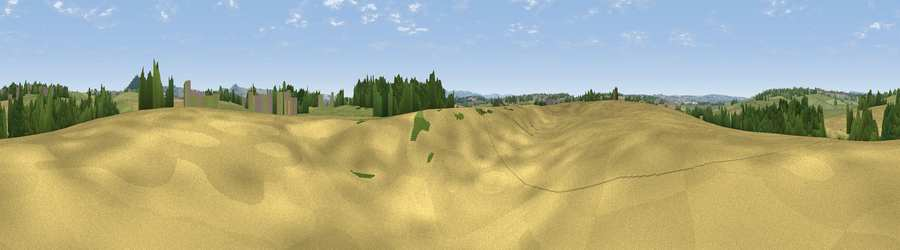

Viewpoint near Todber
#36815 in England · top 78% of its area beats it · near TodberWhere it is
The exact computed spot (ST 79355 20321). Click the marker for map links.
The view, rendered

A 360° render of this exact spot computed from the terrain model, tree cover and land cover — summer colours, afternoon light, calibrated against photographs of famous viewpoints. Real trees, hedges and buildings will differ in detail.
The panorama
Grey silhouette: terrain skyline in each direction (720 bearings, Earth curvature and refraction included). Dashed green: skyline with trees (+15 m) and buildings (+8 m) as obstacles. Blue strip: how far the ground is visible on each bearing.
Where the view opens
Wedge length = distance to the farthest visible ground on that bearing (vegetation-aware). Rings at 10, 25 and 50 km.
What fills the view
46% grassland · 33% cropland · 19% woodland · 2% built-up
Angular shares of the visible panorama (visual magnitude), not map area. Landscape diversity 0.48 (0–1 Shannon).
Key numbers
More beautiful places nearby
The staircase of upgrades: each row has a higher view potential than everything closer. Driving times are estimates from straight-line distance, calibrated against real road routing — check an actual route before setting out.
| Place | Direction | Drive | Score |
|---|---|---|---|
| Viewpoint near Marnhull | SW · 3 km | ~8 min | 48.4 |
| Viewpoint near Stour Row | ENE · 3 km | ~8 min | 53.2 |
| Viewpoint near Stour Row | NE · 4 km | ~9 min | 70.0 |
| Melbury Hill | E · 8 km | ~16 min | 72.5 |
| Viewpoint near Child Okeford | SE · 9 km | ~18 min | 72.8 |
| Hambledon Hill | SE · 9 km | ~18 min | 74.6 |
| Viewpoint near Berwick St John | E · 13 km | ~24 min | 78.2 |
| Eggardon Hill | SW · 36 km | ~54 min | 80.3 |
50.98192, -2.29546 · source: osm peak · position refined by local search. Computed location — check access rights before visiting.